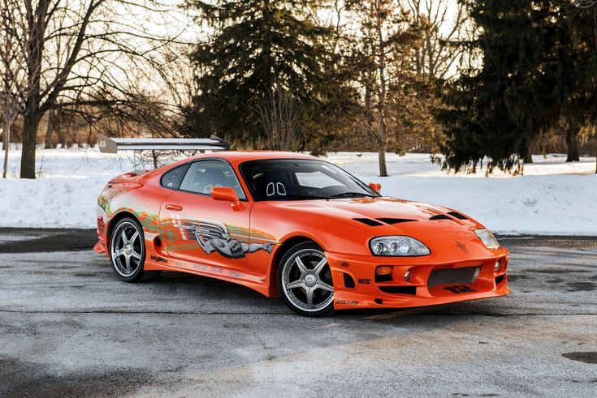

⬅ Back to Dashboard
S U P R A

<>
Manufacture Toyota Also called Toyota Celica XX (Japan, 1978–1986)
Toyota Celica Supra (international, 1978–1986)
Toyota GR Supra (2019–present)Production
April 1978[1] – August 2002
March 2019[2] – present
Body and chassis
Class Sports car/grand tourer (S)
Body style 3-door liftback/fastback coupé
Layout Front-engine, rear-wheel-drive
Chronology
Predecessor Toyota Celica (A20/A30)